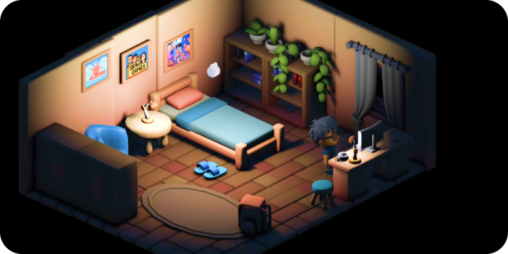

PREVENÇÃO E
INFORMAÇÃO
Você aprende se divertindo! S.O.S. Alergia é um jogo desenvolvido para ensinar um pouco sobre os cuidados que uma pessoa que possui essa condição tem que ter, ele serve, também, como um alerta para quem não sofre com isso. Conhecimento também é prevenção.
Deslize para saber mais
As alergias alimentares representam respostas imunológicas anômalas desencadeadas por proteínas consideradas inofensivas pela maioria das pessoas. Nesses casos, o sistema imunológico produz anticorpos do tipo IgE, que, ao reconhecerem tais proteínas em exposições subsequentes, promovem a liberação de mediadores como a histamina.
Esse processo resulta em manifestações clínicas que variam de reações cutâneas leves até quadros graves de anafilaxia, caracterizados por comprometimento respiratório, cardiovascular e risco iminente à saúde do indivíduo
O diagnóstico das alergias exige acompanhamento médico especializado, frequentemente apoiado por testes cutâneos (prick test) e dosagem sérica de IgE específica. O tratamento consiste, predominantemente, na exclusão rigorosa do alérgeno da dieta, associado à adoção de medidas preventivas como leitura atenta de rótulos, comunicação em ambientes de preparo de alimentos e disponibilidade de medicamentos de emergência.
A alergia, de forma geral, envolve a ativação do sistema imunológico, podendo gerar sintomas mesmo em quantidades mínimas do alérgeno ingerido. Os principais alimentos desencadeadores incluem leite, ovos, amendoim, nozes, trigo, soja, peixe e frutos do mar, sendo estes últimos notoriamente persistentes e potencialmente severos.
A vivência cotidiana de pessoas alérgicas requer estratégias de enfrentamento que englobam desde a identificação de riscos em contextos sociais até a utilização de dispositivos de alerta médico. Além disso, fatores como reações cruzadas, observadas entre proteínas estruturalmente semelhantes de diferentes espécies, ampliam a complexidade da condição. Protocolos internacionais de segurança alimentar, implementados por órgãos regulatórios como OMS, FAO, FDA e Anvisa, reforçam a necessidade de rotulagem clara e práticas preventivas em restaurantes e indústrias.
Embora pesquisas atuais investiguem terapias promissoras, como a imunoterapia oral e o desenvolvimento de vacinas, a conduta predominante ainda se fundamenta na prevenção e no manejo adequado das crises. Assim, a compreensão científica e a conscientização sobre as alergias configuram elementos centrais para reduzir riscos, proteger indivíduos vulneráveis e ampliar a segurança alimentar e medicamentosa dessa parcela da sociedade.
David é um jovem com um objetivo simples: comemorar seu aniversário em seu restaurante favorito, o Sabor do
Nordestão. Mas há um detalhe muito importante nessa história — ele é gravemente alérgico a frutos do mar.
Para sua infelicidade, no exato dia em que chega ao restaurante, uma mega promoção de pratos à base de
frutos do mar entra em vigor, arruinando seus planos.
Naquela noite, tomado pela frustração, David
mergulha em um mundo de sonhos e desafios, onde precisa usar toda a sua astúcia e habilidade para escapar
dos perigos alergênicos que o cercam. Ajude-o a superar obstáculos enquanto aprende, de forma divertida,
sobre os riscos e as formas de prevenção relacionados à alergia a frutos do mar.
Criado no RPG Maker MV, o jogo adota uma abordagem retrô, com exploração de cenários, coleta de itens e mini
desafios interativos. A exploração é essencial para aprender sobre os riscos e as formas de prevenção dos
diversos tipos de alergias, focado na alergia alimentar, enquanto o jogador desvia de obstáculos e supera
desafios.
Pule por piscinas de caldo de frutos do mar
Desvie de pratos de caranguejo atirados
por garçons loucos
Evite a senhora melada de camarão toque você
Resolva quebra cabeças
desafiadores
Encare chefões que exigem raciocínio e habilidades motoras eficientes.
Narrativa imersiva que conecta ciência, saúde e aventura.
Mecânica de coleta de itens.
Uma versão demo jogável pensada para experimentação e feedback da comunidade.
Uma versão demo jogável pensada para experimentação e feedback da comunidade.
Conteúdo científico integrado à experiência lúdica, combatendo a desinformação sobre alergias.
Prepare-se para jogar, aprender e refletir sobre escolhas que podem ajudar a salvar vidas!

O jogo S.O.S. Alergia está em desenvolvimento para compartilhar informações sobre os cuidados em casos de alergia alimentar e medicamentosa de forma lúdica e interativa. Em um futuro próximo, ele ganhará uma versão em 3D, que trará mais imersão e realismo, tornando a experiência dos jogadores ainda mais envolvente.


Omar Ezequiel Henrique Franco Zaldívar

Tatiana Portela Souza de Oliveira
S.O.S. Alergia vai além do entretenimento. Ele compartilha informações sobre as alergias em desafios interativos, mostrando que aprender também pode ser lúdico. Seja você uma pessoa com alergia, alguém que convive com isso no dia a dia, ou apenas curioso sobre saúde e jogos diferentes, este título oferece uma experiência única de aprendizado e engajamento.